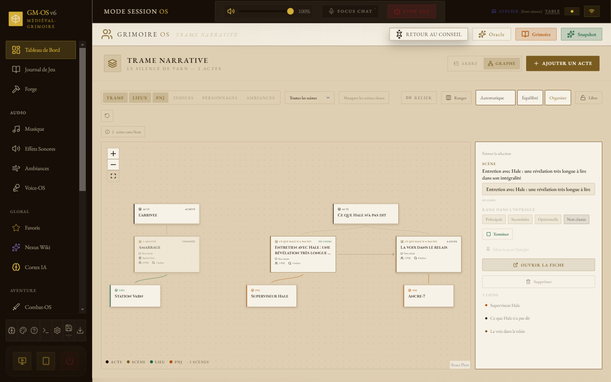
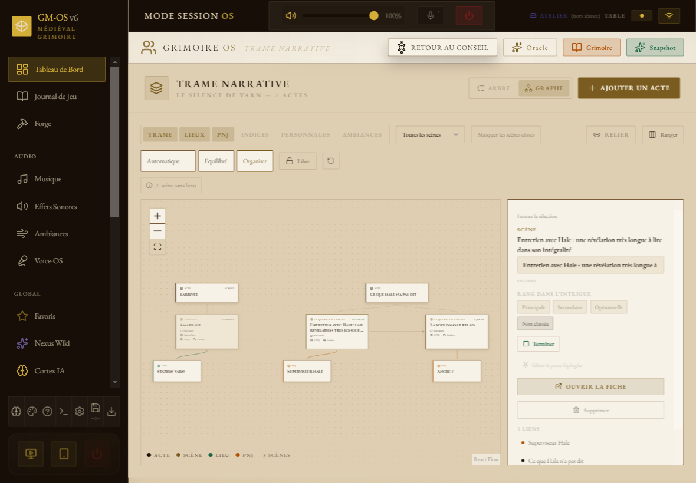
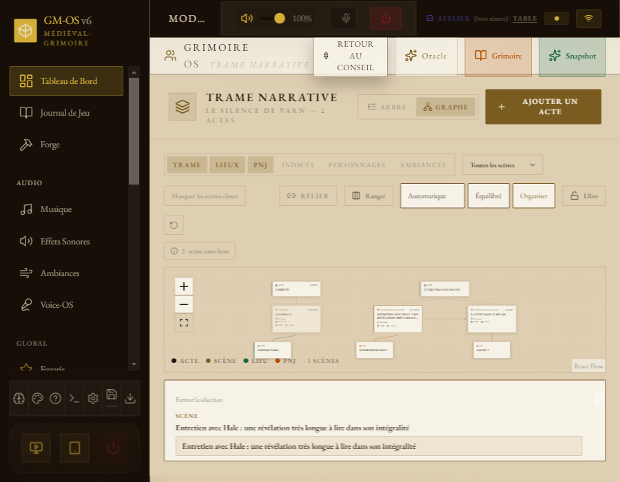
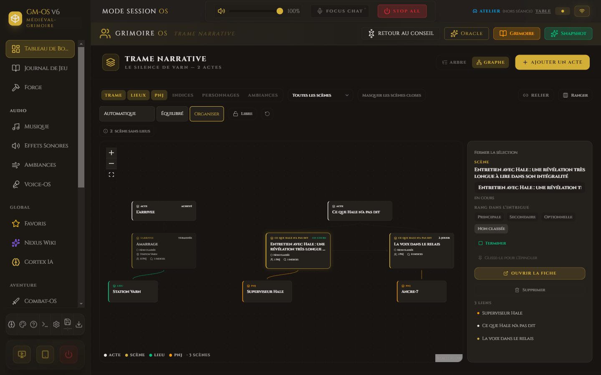
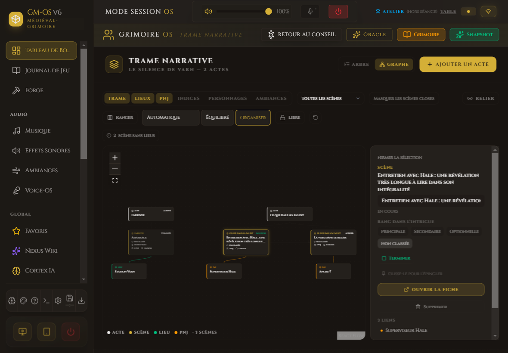
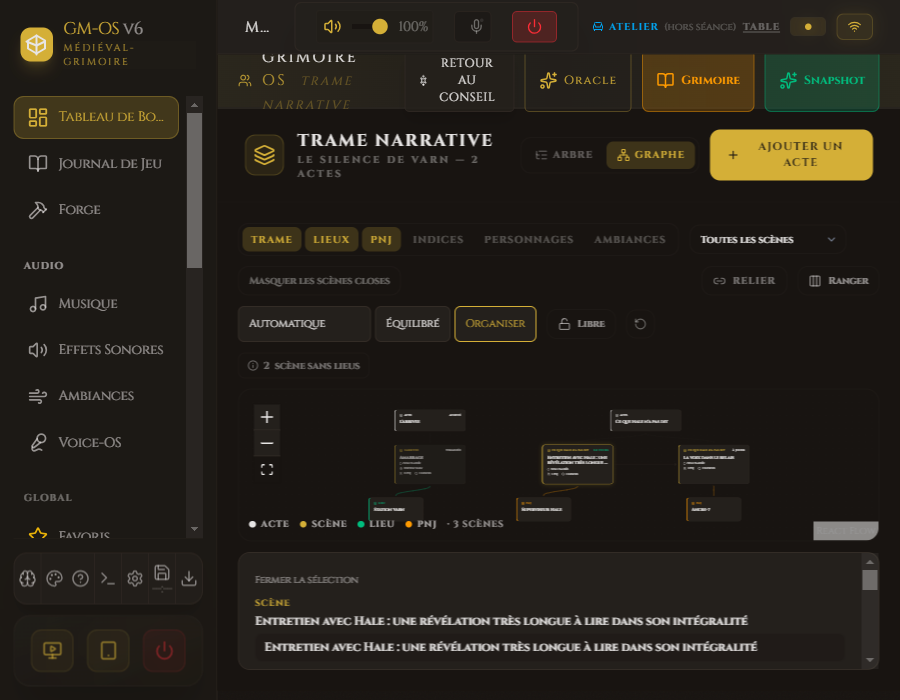

Trame · medieval · personnalités et trois formats · 07/10/2026

medieval · personnalites · 1440 px

medieval · personnalites · 1180 px

medieval · personnalites · 900 px

medieval · base · 1440 px

medieval · base · 1180 px

medieval · base · 900 px